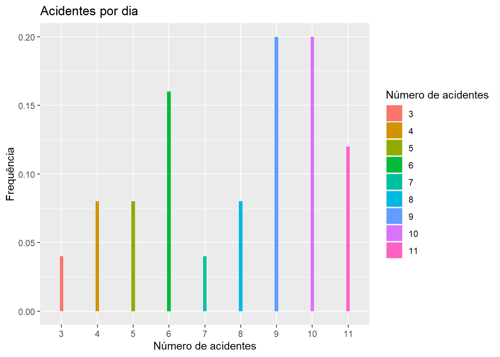
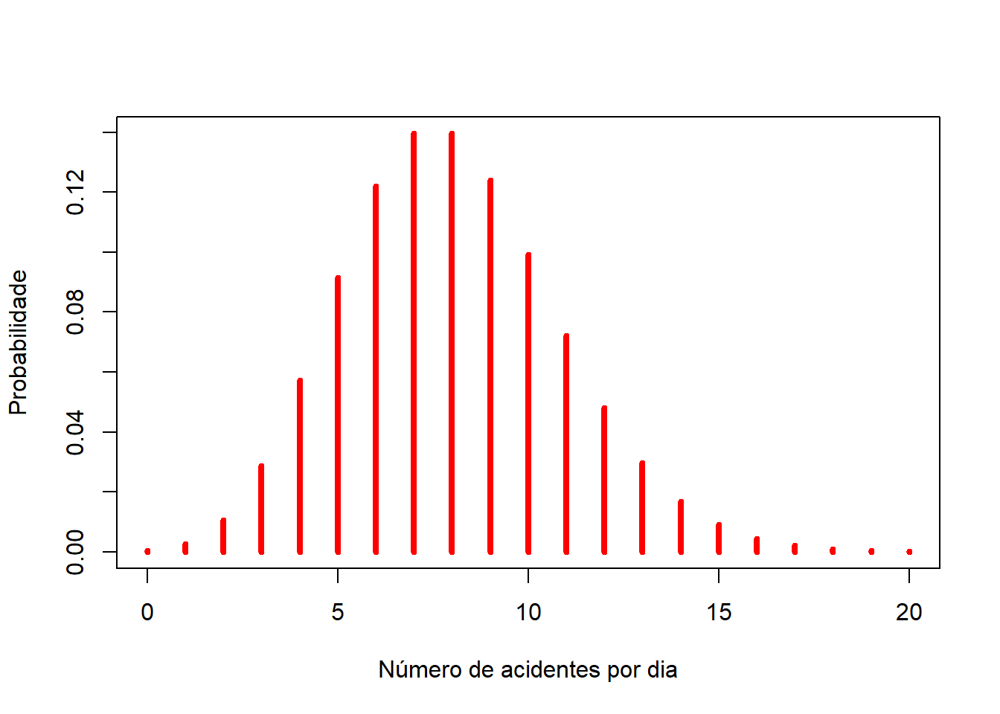

Distribuição de Probabilidade no R
Introdução
O R inclui algumas operações com as distribuições de probabilidade. Pode-se observar que existe 4 operações básicas indicadas pela seguinte letras:
\(d\) calcula a densidade de probabilidade \(f(x)\) no ponto;
\(p\) calcula a função de distribuição acumulada \(F(x)\) no ponto;
\(q\) calcula o quantil correspondente a uma dada probabilidade;
\(r\) gera uma amostra aleatória da distribuição
Distribuição de Poisson no R
Uma variável aleatória \(X\) segue distribuição de Poisson, a partir de um processo de Poisson, se sua função de probabilidade é representada por
\[P(X=x)=\frac{e^{-\lambda}\,\lambda^{x}}{x!},\quad \quad \quad x=0,1,\ldots\] em que, o parâmetro \(\lambda \geq 0\) representa a taxa média de ocorrência por unidade de medida (tempo, por exemplo).
Exemplo 1
Nos últimos 30 dias foram registrados a quantidade de acidentes por dia em uma determinada cidade. Vamos construir a tabela de frequência para o número de acidentes.
Então,
acidente <- data.frame('acd'= c(9, 6, 9, 11, 10, 10, 6, 10, 9, 4, 8, 10,
10, 7, 9, 11, 4, 6, 11, 8, 5, 3, 5, 9, 6))
table(acidente$acd)
#
# 3 4 5 6 7 8 9 10 11
# 1 2 2 4 1 2 5 5 3Utilizando o pacote ggplot podemos plotar o gráfico Frequência x Número de acidentes, isto é
require(ggplot2)ggplot(acidente, aes(x = as.factor(acd), y=..count../sum(..count..),
fill = as.factor(acd))) +
geom_bar(width=0.1) +
labs(title = "Acidentes por dia",
x = "Número de acidentes",
y = "Frequência",
fill='Número de acidentes')
Observa-se que não temos como afirmar qual será a quantidade máxima de acidentes que podem ocorrer em um único dia. Assim, a distribuição de Poisson é o modelo probabilístico para dados de contagem dentro de um intervalo de tempo.
Calculando-se a média e o desvio-padrão do número de acidentes, temos:
mean(acidente$acd)
# [1] 7.84sd(acidente$acd)
# [1] 2.44404Observa-se que neste modelo, uma estimativa relacionada ao parâmetro \(\lambda\) deve ser a média amostral. Então, pode-se utilizar \(\lambda = 8\) como a taxa de ocorrência de acidentes diaria.
Questão: Qual é a probabilidade de ocorrer 12 acidentes em um único dia ?
dpois(x = 12,
lambda = 8)
# [1] 0.0481268acid_dia <- 0:20
probs <- dpois(x = acid_dia,
lambda = 8)
probs
# [1] 0.0003354626 0.0026837010 0.0107348041 0.0286261442 0.0572522885
# [6] 0.0916036616 0.1221382155 0.1395865320 0.1395865320 0.1240769173
# [11] 0.0992615338 0.0721902064 0.0481268043 0.0296164949 0.0169237114
# [16] 0.0090259794 0.0045129897 0.0021237599 0.0009438933 0.0003974287
# [21] 0.0001589715Graficamente, temos
plot(acid_dia, probs,
xlab = "Número de acidentes por dia",
ylab = "Probabilidade",
type='h', # Traça uma linha vertical
col='red', # Cor da linha
lwd=4) # Espessura da linha/ponto
Exercício no R
Exemplo 2
Falhas ocorrem ao acaso ao longo do comprimento de um fio delgado de cobre. Suponha que o número de falhas segue uma distribuição de Poisson com uma méia \(2,3\) falhas por milímetro.
a) Construa o gráfico da função de probabilidade da variável aleatória.
Determine a probabilidade de :
b) Existir exatamente 2 falhas em 1 mm de fio.
c) Existir 10 falhas em 5 mm de fio.
d) Existir pelo menos uma falha em 2 mm de fio.
e) Ocorrer no máximo 2 falhas em 1 mm de fio.

Este conteúdo está disponível por meio da Licença Creative Commons 4.0